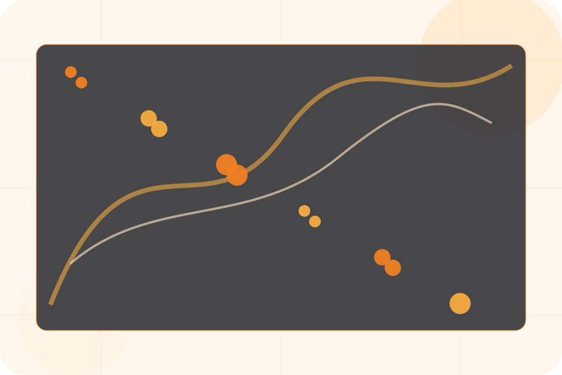
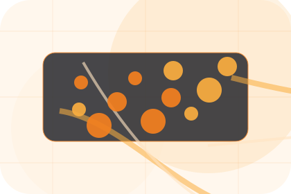
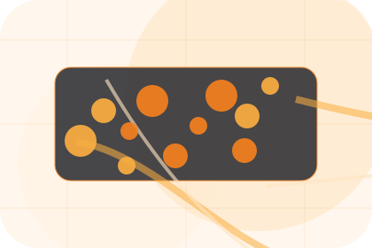
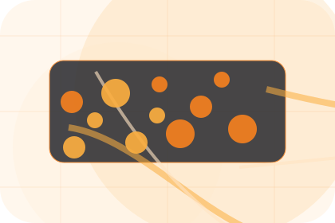
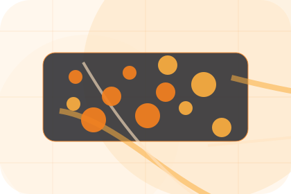
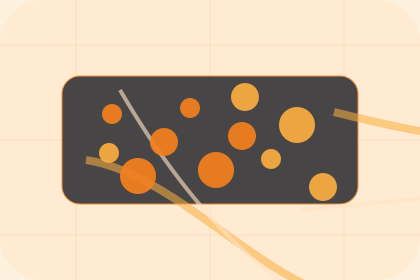

Best Fit
Who should use tickets and when it belongs in the support journey.
Support / 01
Support opens as a clear technology decision hub: what Nexus offers, who it helps, why it matters, and which route to take first.
The first screen combines positioning, proof, primary action, and fast internal navigation, so people can act immediately or compare the rest of the support route with context.
Network diagram hero
Select the closest route and Nexus keeps the next step, proof, and follow-up expectation aligned with uptime and operational control.

Support / 02
Tickets explains the practical scope, best-fit situations, and expected outcome so technology visitors can compare options without decoding jargon.
The section keeps the offer concrete: what is included, who it is best for, what decision it supports, and which linked route gives the deeper detail.
Explore SupportWho should use tickets and when it belongs in the support journey.
The practical benefit visitors should expect after choosing this route.
Where to compare details, pricing, support, or contact options before committing.
Support / 03
Remote explains the practical scope, best-fit situations, and expected outcome so technology visitors can compare options without decoding jargon.
The section keeps the offer concrete: what is included, who it is best for, what decision it supports, and which linked route gives the deeper detail.
Explore Support

Who should use remote and when it belongs in the support journey.
Support / 04
Onsite explains the practical scope, best-fit situations, and expected outcome so technology visitors can compare options without decoding jargon.
The section keeps the offer concrete: what is included, who it is best for, what decision it supports, and which linked route gives the deeper detail.
Explore SupportWho should use onsite and when it belongs in the support journey.
The practical benefit visitors should expect after choosing this route.
Where to compare details, pricing, support, or contact options before committing.
Support / 05
Emergency explains the practical scope, best-fit situations, and expected outcome so technology visitors can compare options without decoding jargon.
The section keeps the offer concrete: what is included, who it is best for, what decision it supports, and which linked route gives the deeper detail.
Explore SupportWho should use emergency and when it belongs in the support journey.
The practical benefit visitors should expect after choosing this route.
Where to compare details, pricing, support, or contact options before committing.
Support / 06
Response explains the practical scope, best-fit situations, and expected outcome so technology visitors can compare options without decoding jargon.
The section keeps the offer concrete: what is included, who it is best for, what decision it supports, and which linked route gives the deeper detail.
Explore SupportNexus structures response around best fit, what changes, and a clear next route so visitors can compare the block quickly before they request an IT audit.
Request IT AuditSupport / 08
Docs explains the practical scope, best-fit situations, and expected outcome so technology visitors can compare options without decoding jargon.
The section keeps the offer concrete: what is included, who it is best for, what decision it supports, and which linked route gives the deeper detail.
Explore SupportWho should use docs and when it belongs in the support journey.
The practical benefit visitors should expect after choosing this route.

Where to compare details, pricing, support, or contact options before committing.
Support / 09
Questions explains the practical scope, best-fit situations, and expected outcome so technology visitors can compare options without decoding jargon.
The section keeps the offer concrete: what is included, who it is best for, what decision it supports, and which linked route gives the deeper detail.
Open ContactWho should use questions and when it belongs in the support journey.
The practical benefit visitors should expect after choosing this route.

Where to compare details, pricing, support, or contact options before committing.
Nexus starts with a focused intake so the recommendation matches the visitor's context, risk, timing, and readiness.
Each route explains inclusions, exclusions, documents, timing, and the decision points that affect final delivery.
The theme uses edge network product system, network service tiles, and support plan comparison, system status cards, ticket route selector rather than a shared template rhythm.
Network diagram hero
Select the closest route and Nexus keeps the next step, proof, and follow-up expectation aligned with uptime and operational control.
Support / 10
Nexus closes the support route with a clear action, a quick reminder of the value, and a low-friction way to request an IT audit.
Visitors who are ready can use the primary action. Visitors who are still comparing can scan the section links, proof, and support routes before they request an IT audit.
Request IT AuditThe final block keeps the choice simple: act now, compare one more proof route, or send enough detail for a focused response.
Request IT Audituptime and operational control
A network-first IT site with technical proof, orange action paths, product cards, and status-aware conversion. Support ends with a direct path to request an IT audit, plus enough context for visitors who still need to compare.

Request IT AuditInformation is provided for planning and should be reviewed for the final client, location, and operating rules.